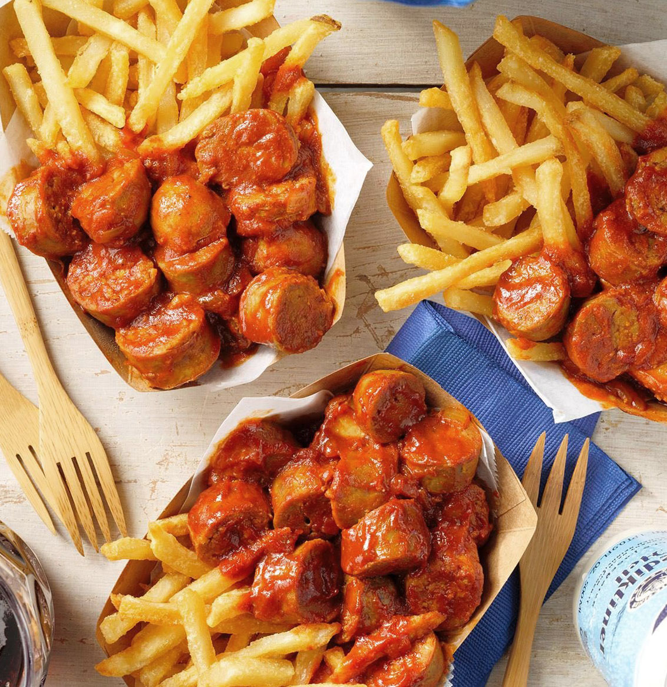

Vegan Currywurst
Description
A vegan alternative to a dish I fell in love with when I first visited Berlin. This recipe tastes great and definitely scratches that itch if you're not in Berlin and are craving some Currywurst sauce!
Inspired by Diony's (The Kitchen Maus) recipe.
Ingredients
- Vegan Bratwursts (Beyond Meat sausages work great with Currywurst Sauce)
- 1 cup Tomato Ketchup
- 1/4 teaspoon Baking Soda
- 5 teaspoons Mild Curry Powder
- 2 teaspoons Smoked Paprika
- 1 teaspoon of Onion Powder
- 1/4 teaspoons of Cayenne Pepper
- 2 teaspoons Vegan Worcestershire Sauce
- 4 tablespoons Vegetable Broth
- 2 tablespoons Water
Steps
- Put 1 cup of tomato ketchup in a small saucepan and heat on medium low. When ketchup is warmed through, add baking soda and stir continuously until foaming subsides. Ketchup should look normal again.
- Reduce heat to low. Add remaining ingredients, through to water and stir until combines. Let it simmer on the stow for 5 - 10 minutes to meld flavours.
- Serve warm over sliced bratwurst with crusty bread or fries as a side.